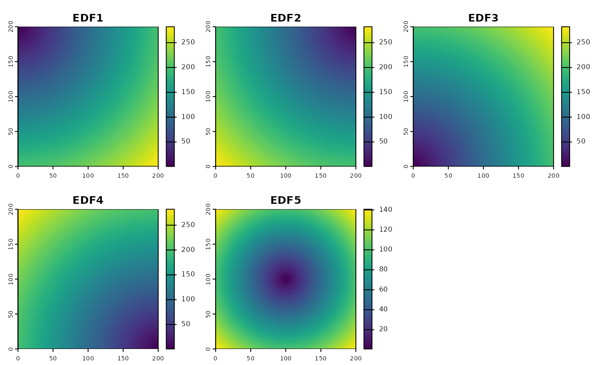
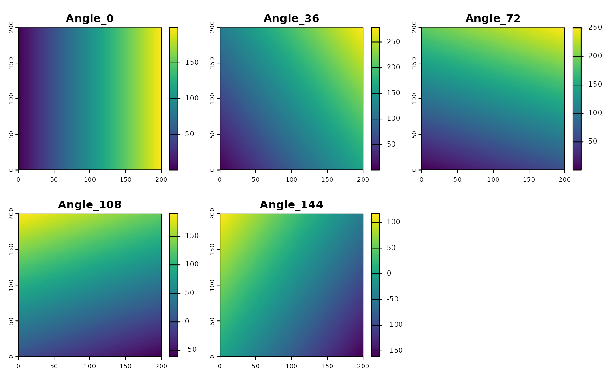

Creating spatial proxies
Jakub Nowosad
2025-01-24
Creating-spatial-proxies.RmdLet’s start by attaching the necessary packages.
Next, we create a raster object, which properties will serve as a base for the spatial proxies.
rast_grid = terra::rast(xmin = 0, xmax = 200, ymin = 0, ymax = 200,
ncols = 200, nrows = 200)The make_proxy() function generates spatial proxies for
a given raster object. It generates three types of proxies: coordinates,
Euclidean Distance Fields (EDF), and Oblique Geographic Coordinates
(OGC).
# coordinates
proxy_coords = make_proxy(rast_grid, "coordinates")
plot(proxy_coords)
# Euclidean Distance Fields (EDF)
proxy_edf = make_proxy(rast_grid, "edf")
plot(proxy_edf)
# Oblique Geographic Coordinates (OGC)
proxy_ogc = make_proxy(rast_grid, "ogc", n = 5)
plot(proxy_ogc)
Additionally, the add_proxy() function can be used to
add a proxy to an existing raster object.
Note: Spatial proxies can be used as predictors in machine learning models to represent spatial structure in the data. However, it is important to remember that they, in general, work best for interpolation problems and may not be suitable for extrapolation. For more information on the usefulness and limitations of spatial proxies for machine learning models, see the Mila et al. (2024) paper.